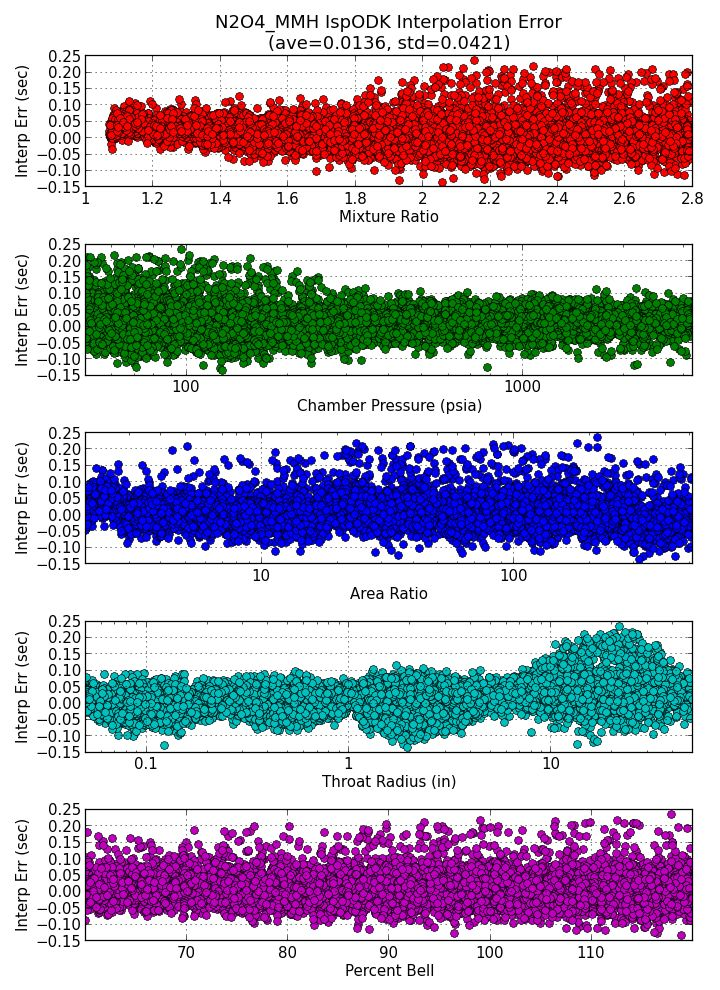
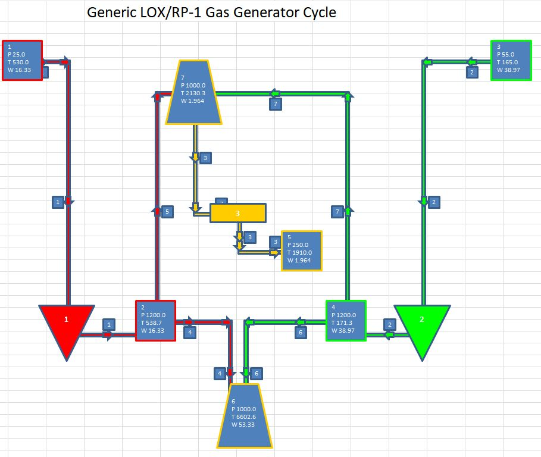
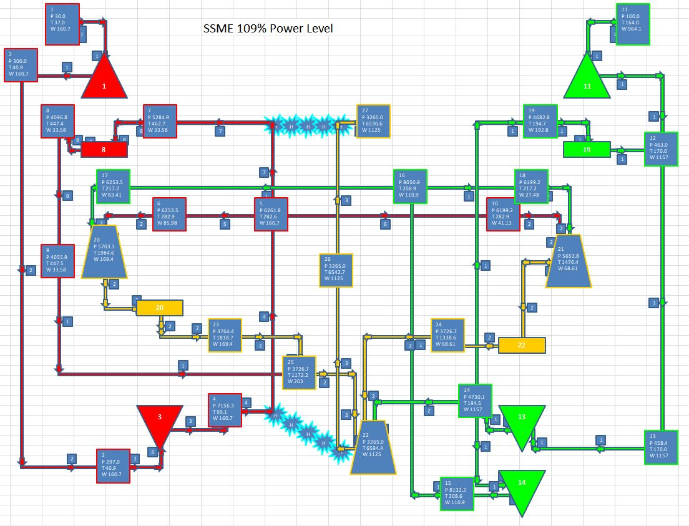
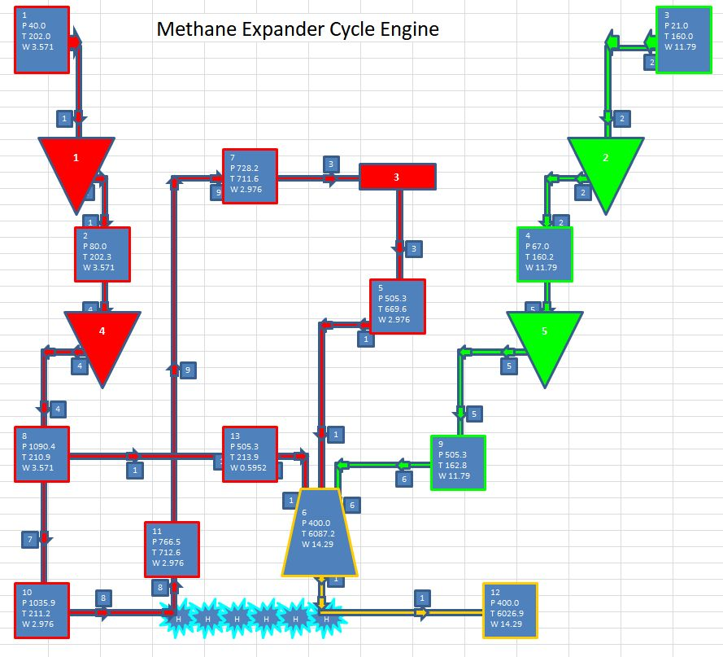

Future Improvements¶
PRISM currently requires each user to purchase and install the commercial programs RefProp and TDK. Aside from the expense and inconvenience of this approach, the execution speed of calculating 2D kinetic Isp can cause complex PRISM cases to have long run times and RefProp can pose problems when switching back and forth between fluids many times. (see: Changing Fluids and Calling SETUP Multiple Times)
A better approach would be to use interpolated database lookups for TDK values and the open source project CoolProp as a substitute for RefProp.
In addition to the commercial programs' replacement, the generic power balance routines in PRISM need to be reconnected to fluid and combustion product libraries to restore their operability.
Convert RefProp calls to CoolProp¶
CoolProp is an open source project for calculating fluid properties that comes with an interface to python.
CoolProp can be installed directly from PyPi as:
pip install coolprop
It is possible to speed up property calculations by saving tables of properties for interpolation by CoolProp (see: Tabular Interpolation)
Create Standard Performance Database¶
Currently PRISM runs the Two Dimensional Kinetics(TDK) software program directly.
It would be highly desirable to place the results of thousands of TDK runs into a standard database that could be efficiently read and interpolated. It could perhaps be in a standard format like HDF5 so that many languages could access the data (FORTRAN, matlab, python, C++, R, etc.) (see: https://en.wikipedia.org/wiki/Hierarchical_Data_Format)
An Isp database of ODE, ODK or TDK values generated by the TDK program can be interpolated to a very high accuracy. The chart below shows the interpolation error on IspODK of such a database. This is a Monte-Carlo analysis with 10,000 sample points into the database comparing actual TDK point runs with database interpolated values.
Note the standard deviation indicates a 3 sigma error of about 0.1 sec, largely driven by very low Pc, very high MR and very big throats. Even that small error could be reduced by creating more points in the table at those higher error regions.
{kind=link}
Generic Power Balance¶
In the prism/tpa/powerbal subdirectory, there is a Generic Power Balance code that can solve for the temperature, pressure and flow rate at all the key points of a liquid rocket engine pump-fed engine. It can solve gas generator bleed cycles, expander cycles, staged combustion cycles and any other variant for which a flow diagram can be defined.
Since being written in 2003, the interface to the fluid and combustion gas properties has changed and needs to be updated.
The images below show the output schematics of a gg cycle, a staged combustion cycle and an expender cycle.
  {kind=link}
{kind=link}
{kind=link}
The Excel spreadsheet output summaries of the above cases can be viewed by clicking the links below.
LOX/RP1 GG Cycle
SSME Staged Combustion Cycle
Methane Expander Cycle